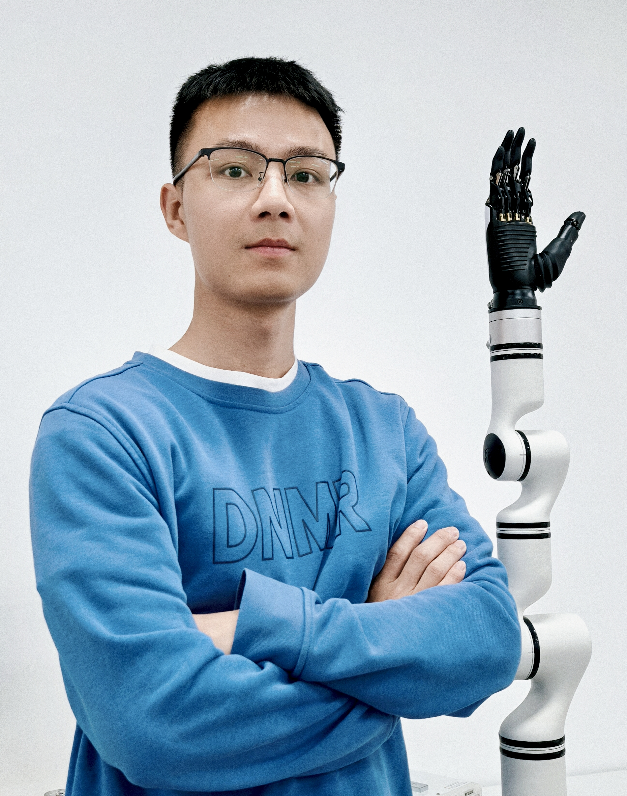

简历-杨皓

📮 联系方式
- 📧 邮箱：haoyang1306@qq.com
- 📱 电话：18717963787
- 📍 地址：上海市嘉定区玉麦路388弄
- 💬 微信：yh18717963787
💼 工作/实习经历
机器人算法工程师 | 中核装备技术研究（上海）有限公司 | 2025.08 - 现在
机械狗巡检项目
- 负责云深处X30机械狗的导航算法适配调试，实现特定任务点位的自动巡检。
- 使用睿尔曼机械臂，实现机械臂自动追踪功能算法。
- 使用海康的双光相机，实现相机参数自动调整并拍照。
- 项目开发基于ROS系统，编程语言为python。
项目技术栈：ROS, Python, OpenCV
机器人算法工程师 | 中核装备技术研究（上海）有限公司 | 2025.03 - 2025.08
机械臂自动分拣项目
- 基于睿尔曼机械臂和D435相机，复现Graspnet网络，结合yolo系列的目标识别和分割模型，实现对桌面物体的自动识别和抓取，并放置到指定区域
- 基于睿尔曼机械臂（及LeRobot机械臂）和D435相机，复现ACT和DP网络，通过模仿学习，实现自动对桌面物体进行抓取放置的功能
- 基于ROS框架，开发主从臂协作控制算法，使用睿尔曼机械臂进行主从臂控制，进行数据采集
- 项目开发基于ROS系统，编程语言为python。
项目技术栈：ROS, Python, OpenCV, PyTorch
🔧 校园项目经历
2024.06-2024.12 | 毕业设计
《纯视觉基于时间与空间特征融合的端到端自动驾驶》
采用摄像机作为单一传感器，融合连续时间点的图像数据与汽车状态数据（坐标/速度/加速度），实现未来轨迹预测与无人驾驶控制。核心工作包括：
- 设计时空特征融合网络架构，处理多模态传感器数据
- 搭建PyTorch训练框架，优化模型时序处理能力
- 基于OpenDriveLab竞赛数据集完成算法验证
深度学习
特征融合
CNN/RNN/Transformer
Python/PyTorch
2023.10-2024.04 | 科研项目 | 主导
《基于模仿学习的纯视觉端到端自动驾驶》
基于nuScenes数据集，对比研究ResNet/ViT等视觉模型与LSTM/GRU时序模型在端到端自动驾驶中的表现。主要成果：
- 实现碰撞率检测算法，性能超越STP-3基准模型
- 构建多模型对比实验框架，优化训练策略
- 完成nuScenes数据集的预处理与增强方案
模仿学习
目标检测
PyTorch/TensorFlow
2023.04-2023.08 | 实习项目 | 主导
《基于城市模拟器的端到端自动驾驶》
在Unity模拟器环境中实现基于视觉的自动驾驶系统，关键技术包括：
- 搭建YOLOv5目标检测模块，实现实时障碍物识别
- 设计神经网络控制指令矫正算法
- 完成Cityscape数据集的标注与训练
计算机视觉
强化学习
Unity3D/ROS
📰 发表文章
H. Yang et al., "Closed-Loop Safety Inspection Application via Embodied Robots," 2025 2nd International Symposium on AI and Cybersecurity (ISAICS), Bengbu, China, 2025, pp. 1-5, doi: 10.1109/ISAICS66888.2025.11350245.
🎓 教育经历
慕尼黑工业大学 | 机器人、认知与人工智能 | 硕士 | 2022.04 - 2024.12
- 主修课程：机器学习、深度学习、计算机视觉、机器人学、路径规划、人工智能、自动驾驶与设计等
- GPA: 1.9/1.0
同济大学 | 汽车服务工程 | 本科 | 2017.09 - 2022.04
- 主修课程：汽车工程基础、汽车电子控制、驱动技术、JAVA、机械原理、电工学、自动原理等
- GPA: 4.0/5.0
- 奖项：国家励志奖学金、校级优秀学生、DAAD奖学金等
- 担任班级班长，校共青团团委志愿者工作部干事
纽伦堡应用技术大学 | 汽车服务工程 | 本科 | 2020.09 - 2022.04
- 主修课程：Matlab、汽车动态控制、内燃机技术等
- 交换学习，在德国完成了半年的课程，9个月实习，毕业设计
📜 个人技能
- 德语TestDaF证书 | 17/20
- 英语雅思证书 | 6.5
- 编程与软件：Python、Matlab、R语言、ROS、ROS2、SolidWorks
Resume - Hao Yang
📮 Contact Information
- Email: haoyang1306@qq.com
- Phone: (+86) 187-1796-3787
- Address: Yumai Road 388, Jiading District, Shanghai, China
- WeChat: yh18717963787
💼 Professional Experience
Robotics Algorithm Engineer | China National Nuclear Corporation Equipment Technology Research (Shanghai) Co., Ltd. | 03.2025 - Present
Mechanical Dog Inspection Project
- Adapted navigation algorithms for Yunshen X30 quadruped robots to achieve automated inspection at specific mission points
- Developed robotic arm tracking algorithms using Realman robotic arms
- Implemented automatic camera parameter adjustment system with Hikvision dual-spectrum cameras
- Project developed based on ROS framework using Python programming
Tech Stack: ROS, Python, OpenCV
Robotics Algorithm Engineer | China National Nuclear Corporation Equipment Technology Research (Shanghai) Co., Ltd. | Mar 2025 - Aug 2025
Mechanical Arm Automatic Sorting Project
- Reproduced GraspNet network with Realman robotic arms and D435 cameras, integrating YOLO object detection models and segmentation models for automated package handling
- Developed imitation learning-based grasping algorithms using ACT and DP networks for desktop object manipulation
- Design master-slave robotic arm control system using ROS framework
- Project developed based on ROS framework with Python implementation
Tech Stack: ROS, Python, OpenCV, PyTorch
🔧 Academic Projects
Jun 2024 - Dec 2024 | Capstone Project
"End-to-End Autonomous Driving with Pure Vision"
Utilizing cameras as the sole sensor, this project fused continuous time-series image data with vehicle state data (coordinates/speed/acceleration) to achieve trajectory prediction and autonomous control. Key deliverables:
- Designed spatio-temporal feature fusion network architecture for multimodal sensor data processing
- Built PyTorch training framework with optimized temporal processing capabilities
- Algorithm validation using OpenDriveLab competition dataset
Deep Learning
Feature Fusion
CNN/RNN/Transformer
Python/PyTorch
Oct 2023 - Apr 2024 | Research Project | Lead
"Vision-Centric Autonomous Driving"
Comparative study of ResNet/ViT vision models and LSTM/GRU temporal models for end-to-end autonomous driving using nuScenes dataset. Key achievements:
- Developed collision detection algorithm outperforming STP-3 baseline model
- Constructed multi-model comparison framework with optimized training strategies
- Implemented nuScenes dataset preprocessing and augmentation pipeline
Imitation Learning
Object Detection
PyTorch/TensorFlow
Apr 2023 - Aug 2023 | Internship Project | Lead
"Simulation-based Autonomous Driving in Crowded City"
Implemented vision-based autonomous driving system in Unity simulator environment. Key technologies:
- Built YOLOv5 object detection module for real-time obstacle recognition
- Designed neural network-based control command correction algorithm
- Completed Cityscape dataset annotation and training
datasets collection and process,
network construction and tuning,
Python, PyTorch
📰 Papers
H. Yang et al., "Closed-Loop Safety Inspection Application via Embodied Robots," 2025 2nd International Symposium on AI and Cybersecurity (ISAICS), Bengbu, China, 2025, pp. 1-5, doi: 10.1109/ISAICS66888.2025.11350245.
🎓 Education Background
TUM | Master | Robotics, Cognition and Intelligence | April 2022 - Dec 2024
- Core Courses: Machine Learning, Deep Learning, Computer Vision, Robotics, Motion Planning, AI, Autonomous Driving Design etc.
- GPA: 1.9/1.0
Tongji University | Bachelor | Automotive Engineering | 2017.09 - 2022.04
- Main Courses: Automotive Engineering Fundamentals, Automotive Electronics, Drive Technology, JAVA, etc.
- GPA: 4.0/5.0
- Awards: National Encouragement Scholarship, Campus Excellence Award, DAAD Scholarship
- Class Monitor, Youth Volunteers Association Member
Technische Hochschule Nürnberg Georg Simon Ohm | Bachelor | Automotive Engineering | 2020.09 - 2022.04
- Main Courses: Matlab, Automotive Dynamics Control, Internal Combustion Engines
- Exchange Program: Completed 6 months of coursework, 9 months internship, and Bachelor thesis in Germany
📜 Professional Skills
- German TestDaF Certificate | 17/20
- IELTS Score | 6.5
- Programming: Python, Matlab, R, ROS, ROS2, SolidWorks
🎨 Interests
Table Tennis, Badminton, Traveling, Music, Movies